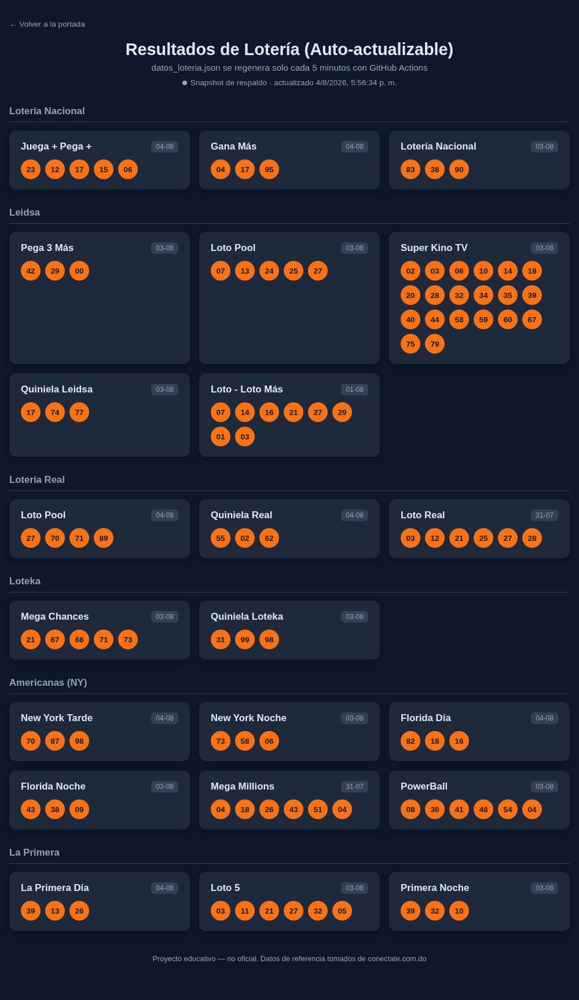

Un scraper visita el sitio real, lee los números ganadores y los publica aquí automáticamente — sin servidores que mantener, sin tocar nada a mano. Corre gratis con GitHub Actions y GitHub Pages.
Ver resultados en vivo → ¿Cómo funciona?
Un workflow de GitHub Actions corre el scraper cada 5 minutos y publica los datos nuevos, sin intervención manual.
GitHub Pages para el hosting y GitHub Actions para la automatización no cuestan nada dentro de los límites gratuitos.
Todo el scraper (Python + Playwright) y la página (HTML/CSS/JS) están incluidos para estudiar, copiar o modificar.
GitHub Actions despierta cada 5 minutos y ejecuta actualizar_datos.py.
Ese script abre un navegador headless (Playwright), renderiza el JavaScript del sitio de lotería y lee los números ya insertados en la página.
Los resultados se guardan en datos_loteria.json y la Action hace commit y push del archivo si cambió.
La página resultados.html, ya publicada en GitHub Pages, lee ese JSON con fetch() y repinta las tarjetas — visible para cualquiera que entre al link.